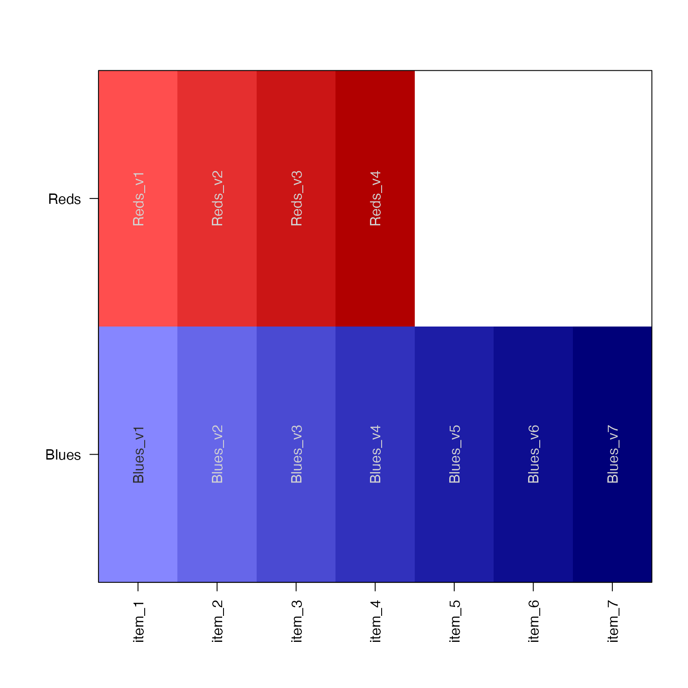
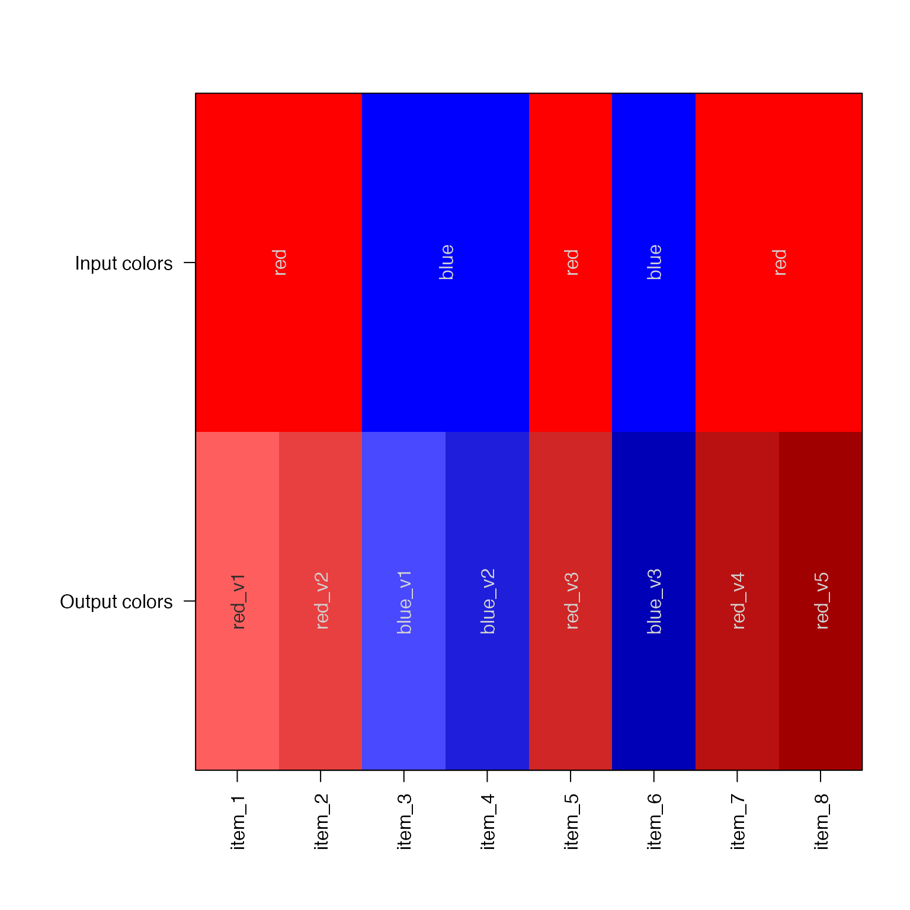

Make a color gradient
color2gradient( col, n = NULL, gradientWtFactor = 2/3, reverseGradient = TRUE, verbose = FALSE, ... )
Arguments
| col | vector of one or more colors, or list of color vectors, or
vector of repeated colors. If the vector contains unique colors, each
color is expanded into a gradient of length |
|---|---|
| n | integer vector of length one or more, which defines the number of colors to return for each gradient. |
| gradientWtFactor | numeric fraction representing the amount to expand a color toward its maximum brightness and darkness. |
| reverseGradient | logical whether to return light-to-dark gradient (TRUE) or dark-to-light gradient (FALSE). |
| verbose | logical whether to print verbose output. |
| ... | other parameters are ignored. |
Details
This function converts a single color into a color gradient by expanding the initial color into lighter and darker colors around the central color. The amount of gradient expansion is controlled by gradientWtFactor, which is a weight factor scaled to the maximum available range of bright to dark colors.
As an extension, the function can take a vector of colors, and expand each
into its own color gradient, each with its own number of colors.
If a vector with supplied that contains repeated colors, these colors
are expanded in-place into a gradient, bypassing the value for n.
If a list is supplied, a list is returned of the same length, where
each vector inside the list is a color gradient of length specified
by n. If the input list contains multiple values, only the first
color is used to define the color gradient.
See also
Other jam color functions:
alpha2col(),
applyCLrange(),
col2alpha(),
col2hcl(),
col2hsv(),
fixYellowHue(),
fixYellow(),
getColorRamp(),
hcl2col(),
hsv2col(),
isColor(),
kable_coloring(),
makeColorDarker(),
make_styles(),
rgb2col(),
setCLranges(),
setTextContrastColor(),
showColors(),
unalpha(),
warpRamp()
Examples
# given a list, it returns a list x <- color2gradient(list(Reds=c("red"), Blues=c("blue")), n=c(4,7)); showColors(x);# given a vector, it returns a vector xv <- color2gradient(c(red="red", blue="blue"), n=c(4,7)); showColors(xv);# Expand colors in place # This process is similar to color jittering colors1 <- c("red","blue")[c(1,1,2,2,1,2,1,1)]; names(colors1) <- colors1; colors2 <- color2gradient(colors1); colors2;#> red_v1 red_v2 blue_v1 blue_v2 red_v3 blue_v3 #> "#FF5C5CFF" "#E83F3FFF" "#5C5CFFFF" "#2626D1FF" "#D12626FF" "#0000A3FF" #> red_v4 red_v5 #> "#BA1111FF" "#A30000FF"# You can do the same using a list intermediate colors1L <- split(colors1, colors1); showColors(colors1L);